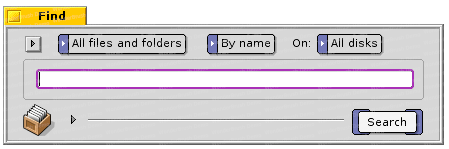
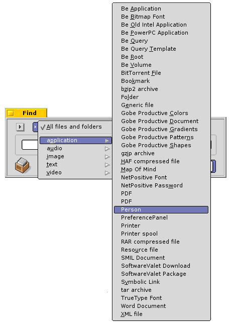
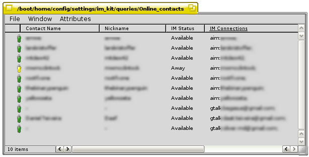

The Instant Messenger
Queries
The Instant Messenger kit makes use of queries and attributes. You can easily create your own queries for this chat solution, and use them as your buddy lists.
Go to the Deskbar and choose Find, or hit ALT + F in a Tracker related window or after first having clicked on the desktop.

In the Query application, choose what file type you want to be searched after by clicking on the pop-down menu All files and folders. In this pop-down menu, first choose application, and from the application's sub-menu, choose Person.

The Query we want to do, is related to the Person files. Choose By attribute from the pop-down menu Name and then that you only want to do the Query on your boot partition (here: Zeta). If you have other BeOS systems on the computer, you can choose All disks.
<screenshot>
As you set the Query type to attribute, a new pop-down menu appears and you can choose between all attributes related to that file type. In the bottom of this menu, you will find the attributes that you made when installing the Instant Messenger kit, IM Connections and IM Status. Choose IM Status, and specify the query to be exact (Is). The exact words that we want to do a query on are Available, Away and Offline, and will show us all our friends that are using one of the supported IM protocols.
<screenshot>
To get the query correct, each IM Status have to be separated with Or (instead of the default And).

If you find this query useful, you can save it for later use by giving it a name and dragging the query icon to the desktop or add them to /boot/home/config/settings/im_kit/Queries. If you add your saved queries to this folder, they will be accessable from the im_kit's replicant in the Deskbar.

The Live Queries are system wide and can be seen in a various of applications making use of the People files and in the operating system it self. In the Recent applications you can also see with who you recently had a chat with and the online status they have now, and start a new chat with them.